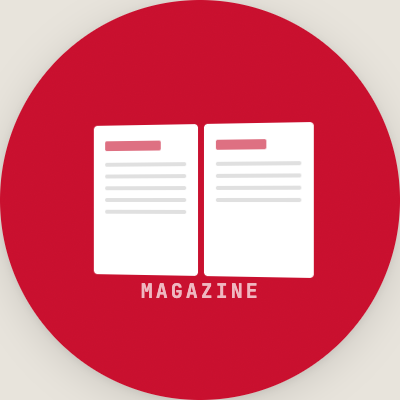
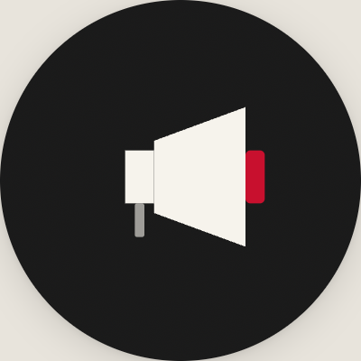
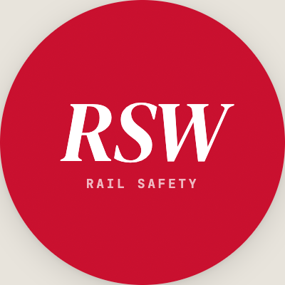
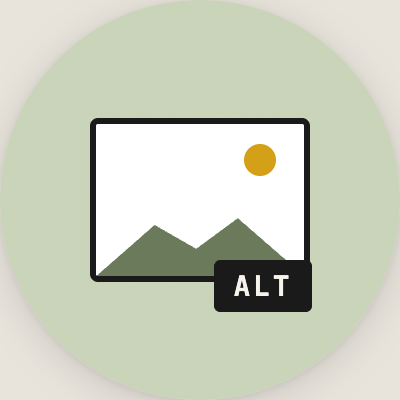
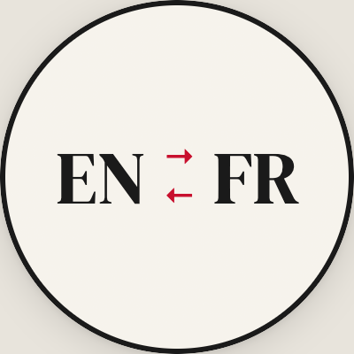

Better drafts, faster,
without losing your voice.
Practical guides for getting real work out of AI. Each one takes about five minutes and gives you something you can use today.
What are you working on?
Pick the thing that's on your desk right now.
Something I need to proofread or rewrite
Catch errors and tighten language without losing your voice.
An email I can't get started
From blank page to a clean draft in 90 seconds.
A speech or talking points
Turn bullets into something a person can actually say out loud.
A briefing note for a meeting
Context, positions, traps, and asks on one page.
A letter to a stakeholder or MP
Formal, firm, and human. Five tone rungs from warm to terse.
A media statement or Q&A prep
Surface the hostile questions before the journalist does.
A presentation or slide deck
Turn a 30-page report into a 10-slide story.
Not seeing your task? Browse all 14 guides
“Three of us used the briefing note guide to prep for a stakeholder meeting last month. What used to take a full afternoon took about 40 minutes, and the principal said it was the tightest brief she'd had in a while.”
Pick a task. Get a pattern.
Each guide shows when to use AI, when not to, a prompt pattern, before/after examples, and a pre-send checklist. All built on the Four Questions.
Draft an email in 90 seconds.
The workhorse. A prompt pattern using the Four Questions, plus the five edits you should always make before hitting send.
Proofread without losing your voice.
How to ask AI to catch errors without rewriting your style into corporate mush.
Speechwriting & talking points.
From bullets to a speakable draft. Openers, structures, Q&A anticipation.
Letter writing: formal & firm.
Official letters, MP responses, stakeholder correspondence. Five tone rungs, warm to terse.
Presentations & slide content.
Turn a 30-page report into a 10-slide story. Outline first, then fill.
Q&A prep & media statements.
Surface the hostile questions before the journalist does. Draft a 40-word statement you can actually defend.
Holding statements when the clock is ticking.
What AI is good for in a crisis, and where to stop and call Legal.
Summarize a long document.
Three summary types (exec, skim, deep) and when to ask for each.
Stakeholder & audience analysis.
Who cares, what they want, what'll annoy them. Pre-meeting prep.
Translate tone: exec ↔ FLS ↔ union.
Rewrite the same message for CN's six audiences without losing its meaning.
Memos & all-employee notes.
Announcing a change without sounding like an HR bulletin.
Briefing notes for meetings.
A one-pager for the principal: context, positions, traps, asks.
Social posts (LinkedIn, X, internal).
Platform-native tone, with a "does this sound human?" test.
FAQs & talking-point packs.
Anticipate 20 questions. Answer the 7 that matter.
Five rules for working with AI.
Pin these. Every guide in this library assumes you already know them.
You're the editor, not the author.
AI drafts. You decide what stays, what goes, and what ships. Your name is on it.
Role, reader, goal every time.
Tell it who you are, who's reading, and what you need. Vague in, vague out.
Feed it your materials.
Paste in your draft, your notes, your data. The better the input, the less you fix.
Never paste what you wouldn't email out.
No passwords, no personal data, no privileged content. When in doubt, redact first.
Fact-check every name, number, claim.
AI invents with confidence. Verify sources, dates, stats, and quotes before anything ships.
Six CN audiences, six tones.
The same message hits differently depending on who's reading it. Name the audience in your prompt, every time.
Executives
Concise, decision-oriented. Numbers up front. No preamble.
Management employees
Context + direction. What changed, what to do.
Front-line supervisors (FLS)
Practical, operational. Talking points they can use.
Unionized employees
Direct, respectful, clear. No corporate softening.
Media & public
News-first. Facts, quotes, context. Every word defensible.
Investors
Precise. Cite sources. Nothing market-sensitive pre-disclosure.
Know what AI is, and isn't, doing.
Short, non-technical explainers. Skim them once so the task guides make sense.
The Four Questions, in depth.
The framework that underpins every guide. Worked example: an announcement that starts vague and ends usable in four moves.
Hallucinations: why it lies with confidence.
Why AI invents sources, stats, and quotes, and the three-step habit that catches it.
What NOT to paste into AI.
Traffic-light guide. Plus the safe-redaction trick that unlocks 90% of real work.
When not to use AI.
Condolences, legally-binding language, safeguarding, real-time facts. Shorter list than you'd think.
Iterating: the follow-up is the skill.
One-shot prompts fail. The four-turn conversation that gets you there.
Which tool for which job.
ChatGPT modes, custom GPTs, Thinking mode, Copilot, what each one is good at.
Build a reliable custom GPT.
The three moves: define the job, lock the sources, standardize the output.
CN house rules for AI output.
Canadian spelling, no acronyms, no em dashes, no emoji, placeholders for missing facts. Copy-paste into any prompt.
Pick a tool. Start working.
These custom GPTs live in your CN ChatGPT account at chat.com. Each one is built for a specific job. Open the one that matches your task.
Go to chat.com and sign in with your CN account. Your custom GPTs appear in the sidebar under “GPTs.” Click one to start a conversation.
Prompt builder
Walks you through the Four Questions step by step to build a ready-to-use prompt for any task.
Open in ChatGPT →Speaking notes generator
Prepares draft speeches for CN speakers at events. Asks about audience, topics, tone, and logistics one step at a time.
Open in ChatGPT →Stakeholder letters
Drafts polished letters for senior CN leaders to send to politicians, public servants, and stakeholders. Eight letter types.
Open in ChatGPT →Briefing note generator
Drafts executive-ready briefing notes: meeting prep, issue overviews, event briefings, trip notes, decision notes, and more.
Open in ChatGPT →
Magazine Editorial Partner
Creates structured, frontline-focused CN Magazine content: features, profiles, safety stories, exec letters, Q&A.
Open in ChatGPT →
customer comms
Drafts customer-facing communications: operational updates, safety advisories, tariff changes, service planning, and more.
Open in ChatGPT →Tracy Robinson comms
Speeches, investor updates, conference remarks, and LinkedIn posts for the CEO. Distinct external voice guidance.
Open in ChatGPT →Exec LinkedIn shares
Generates LinkedIn share updates for CN’s executive team when they share corporate posts.
Open in ChatGPT →Review, revise, and adapt
Reviews and revises content for employees, customers, or investors. Acts as a writing coach with detailed feedback.
Open in ChatGPT →Summarize News Clippings
Summarizes news clippings for executive review with consistent formatting and full coverage tracking.
Open in ChatGPT →Strategy Insights
Analytical strategy manager for researching trends, aggregating data, and framing strategic scenarios.
Open in ChatGPT →PAGA GPT
Drafts incident statements during railway incidents. Three types: initial, updated, and close-out.
Open in ChatGPT →
RSW GPT
Creates Rail Safety Week content for the public, communities, officials, employees, and customers.
Open in ChatGPT →
Alt Text Generator
Generates bilingual alt text (EN-CA, FR-CA, and combined) for CN social media images.
Open in ChatGPT →
translator and glossary
Translates between EN-CA and FR-CA using CN’s official glossary. Also searches the glossary by keyword.
Open in ChatGPT →Using AI well,
on one page.
Green, paste freely
- Public press releases, speeches, reports
- Your own first-person writing
- Generic how-to questions
- Prompts and templates
Amber, redact first
- Internal drafts (remove names, numbers)
- Stakeholder letters (names, addresses)
- Meeting minutes and positions
- Constituent correspondence
Red, never
- Personal data + identifiers
- Legal advice, privileged material
- Pre-announcement market-sensitive info
- HR, safeguarding, investigations
- Credentials, API keys, ever